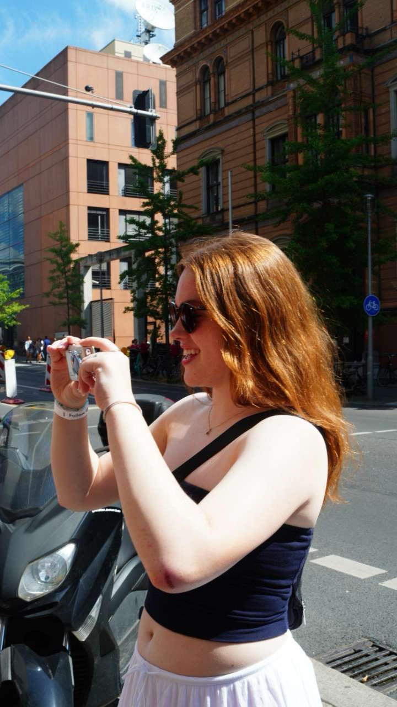

About Me | Ava Trento

Hi! I'm Ava Trento, a third year Data Science and Behavioral Neuroscience student at Northeastern. Separate from school, one of my greatest passions is music. I think my love for music stemmed from all of the experiences I had with it growing up. Through middle and high school, I played the violin, clarinet, and saxophone, and I've also been a vocal performer since I was 8 years old. Also starting at age 8, I was in my first musical theatre production of Seussical, and I stayed involved with acting until I was 18 in my senior year of high school. From the ages of 14 to 18, I took voice lessons, training in both classic and contemporary styles. I am currently a vocalist in the Jazz Ensemble at Northeastern, and I've performed a few gigs around the city as a stand-in vocalist as well.
On the more general topic of music as a whole, I'll say that you'll hardly ever find me without headphones in my ears. Music accompanies me everywhere I go. I have a very eclectic music taste, which is a bit of a cliche among people my age, but I could show you my Spotify profile to prove it to you.